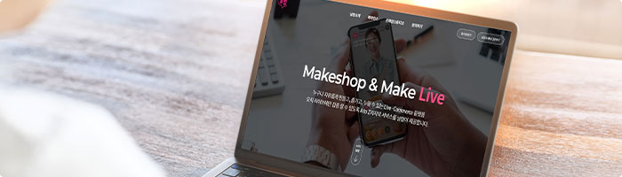

라이브 사전 준비
-
날방TV 라이브 방송의 종료

- 날방TV에서는 방송일과 시간에 대한 특별한 제약은 없으므로 언제든지 자유롭게 방송 시간을 결정하실 수 있습니다.
- 방송을 진행하시고자 하는 날짜를 결정하신 후 날방 TV 담당자에게 방송 일시를 전달해 주시면 방송과 관련되어 사전에 필요한 설정을 진행하고 방송 준비를 도와드립니다.
-

- 날방TV에서는 방송일과 시간에 대한 특별한 제약은 없으므로 언제든지 자유롭게 방송 시간을 결정하실 수 있습니다.
- 방송을 진행하시고자 하는 날짜를 결정하신 후 날방 TV 담당자에게 방송 일시를 전달해 주시면 방송과 관련되어 사전에 필요한 설정을 진행하고 방송 준비를 도와드립니다.
-
날방TV 라이브 방송의 종료
- 방송 진행자에 대한 특별한 제약은 없으며 판매자 본인 또는 출연자를 섭외해 방송을 진행합니다.
- 진행자의 출연 없이 음성만으로도 방송 진행이 가능합니다.

- 날방TV에서는 방송일과 시간에 대한 특별한 제약은 없으므로 언제든지 자유롭게 방송 시간을 결정하실 수 있습니다.

- 날방TV에서는 방송일과 시간에 대한 특별한 제약은 없으므로 언제든지 자유롭게 방송 시간을 결정하실 수 있습니다.
섭외한 진행자가 만 14세 이하일 경우 반드시 성인과 동반 출연해야 합니다.
-
- 방송 진행자에 대한 특별한 제약은 없으며 판매자 본인 또는 출연자를 섭외해 방송을 진행합니다.

장비 준비
- 날방TV 방송을 진행하기 위해서는 빠른 속도를 원활하게 제공하는 인터넷 환경이 지원되어야 합니다.
- 라이브 방송 진행 및 각종 관리를 위해 기본적인 WEB 환경을 지원하는 PC가 필요합니다.
- 날방TV 방송 송출 앱을 사용하기 위해 안드로이드 7.0 이상, ios 13 이상이 지원되는 영상 촬영 기능이 있는 모바일 기기가 필요합니다.
-

방송 홍보
- 성공적인 라이브 방송을 위해 1~2주 전부터 다양한 매체를 통해 방송 일정을 홍보하는 것을 추천합니다.
- 방송을 진행할 자사몰에 배너 노출 및 운영 중인 SNS, 모바일 메신저 등 사용 가능한 매체들을 이용해 적극적으로 방송을 홍보하실 수 있습니다.